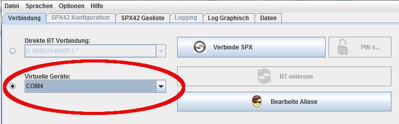

Bluethooth Verbindung
Der Verbindungs-Tab
Nach dem Start des Programmes ist zunächst der Verbindungs-Tab geöffnet.
Einige Tabs sind noch grau hinterlegt (gesperrt), da für deren Benutzung eine
Verbindung zum SPX42 hergestellt sein muß.
Die Oberfläche sieht in ihrem oberen Teil dann in etwa so wie hier angezeigt
aus.
Der Verbindungs - Tab
<<<<<<< HEAD
Die Verbindungs-Listen
Es gibt zwei Verbindungslisten:
zum Inhalt
Das Programm kann nativ, das heißt direkt mit den
Bluethoothgeräten (in diesem Falle der SPX42) kommunizieren.
Ermöglicht wird dies durch eine plattformübergreifende Bibliothek mit dem Namen
"bluecove" (http://bluecove.org/). Diese ist
unter der Apache Lizenz 2.0 veröffentlicht.
Wenn keine Geräte angezeigt werden, oder wenn das angezeigte Gerät ohne "*"
hinter dem Namen angezeigt wird, sollte der "BT einlesen" Button gedrückt
werden. (Natürlich muß der auszulesende SPX42 im Syncronisationsmode sein).
(Siehe Bibliotheken und Lizenzen)

Einlesen der aktiven BT Geräte
Danach kann in der Liste (herunterklappen mit dem Dreieck-Symbol) der gewünschte
SPX42 ausgewählt werden. Via Bluethooth erreichbare SPX42 werden mit einem Stern
hinter dem Gerätenamen gekennzeichnet.
Die Geräte-PIN wird eingetragen, wenn das gewünschte Gerät in der oberen
Auswahlliste gewählt ist und dann der Button "PIN s..." gedrückt wird.
Im dann erscheinenden Dialog wird die PIN eingetragen, und nach erfolgreicher
Verbindung in der internen Datenbank gespeichert.
Verbinde SPX42
=======
Die Verbindungs-Liste
>>>>>>> refs/heads/20130821-removeBlueCove
zum Inhalt
Kann keine Verbindung mit dem SPX42 über direkte Verbindung hergestellt werden,
Ursache kann ein Herstellerspezifischer Treiber des Bluethooth-Adapters sein,
kann auf deisem Weg eine Verbindung zum SPX42 hergestellt werden.
Dazu muß mit dem Betriebssystem ein virtueller Geräteanschluß erzeugt werden.
Die Vorgehensweise sollte im Handbuch des Bluethoothadapters nachzulesen sein.
Wird ein solcher Anschluß erzeugt (im Bild unten unter Microsoft Windows als
"COM4" dargestellt) wird dieser in der unteren Auswahlliste ausgewählt.

Ausgewählter Anschluss "COM4"
Verbinde SPX42
zum Inhalt
Nach dem Druck auf dem Button "Verbinde SPX" sollte nach kurzer Wartezeit
das folgende Bild zu sehen sein:
Ausgewählter Anschluss "COM4"
Es werden alle Buttons, bis auf den Button zum trennen der Verbindung deaktiviert
und alle Tabs aktiviert.
Nun können alle Funktionen des Programmes genutzt werden.
zum Inhalt
Sobald ein Gerät einmal erfolgreich verbunden war, kann ihm ein Alias zugeordnet
werden. Dies ist sinnvoll, um verschiedene SPX42 nicht nur anhand der Nummer
sondern anhand sprechender Namen zu unterscheiden.
Der Alias-Editor ist nur erreichbar, wenn keine
Verbindung zu einem SPX besteht.
Nach dem Druck auf den Button "Bearbeite Aliase" sollte folgende Ansicht
sichtbar sein:
Alias-Editor mit einem Eintrag"
Durch Klicken auf den jeweils rechten Eintrag kann der Alias bearbeitet werden.
ENTER beendet die Bearbeitung und übernimmt den Alias für das Gerät.
Alias-Editor mit einem Eintrag editiert
Danach ist sofort in allen Anzeigen der Aliasname verfügbar. Dieser wird in der
internen Datenbank gespeichert und kann natürlich auch geändert werden.
Ein Druck auf "Verberge Aliase" verbirgt den Alias-Editor wieder.
zum Inhalt